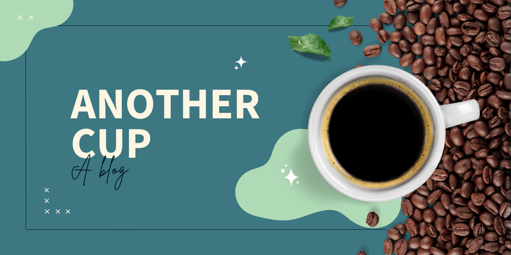

This is my first post in a Quarto blog! That being said, this is also my first attempt at a Quarto blog. Welcome!
I have written blogs before though nothing like this and especially not one with an emphasis on coding. It is very difficult to get a lot of my friends and family interested in the work that I do with R. Therefore, this blog is for me. It’s for me to be able to “talk out” what I find and how I’m learning. It’s a way to discover new things or attempt data science challenges - I’ve always wanted to participate in some of the TidyTuesday challenges!
Have you ever figured out a solution to a problem that then presented itself again several weeks/months/years down the line and you forgot what your original fix was?1
Yeah…I’ve been there a lot. That being said, I am also hoping this blog will be a great place to store all of these workflows for me (or anyone) to reference again in the future.
Why “Another Cup”?
Why did I call this blog “Another Cup”? Well, because some problems simply require another cup of a hot (or cold!) beverage to solve!2
So, here is to tackling new things with another cup of [whatever] in hand!